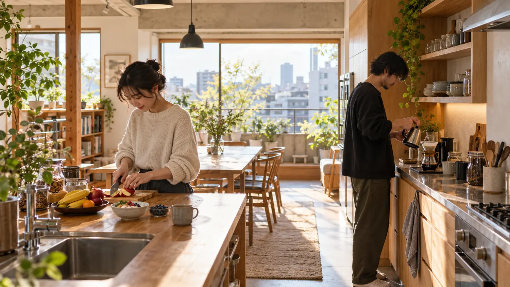

01 / MORNING
朝のキッチン。
「おはよう」が、自然に交わる。
MORE THAN A ROOM
同じテーブルを囲む日。自分の部屋で静かに過ごす日。シェアする暮らしには、いつも誰かと一緒にいる以外の選択もあります。
共用部の心地よさと、個室の落ち着き。その両方を、写真をたどりながら見つけてください。
WALK THROUGH THE HOUSE
ひとつの家にも、過ごし方はいくつもある。
光の入るラウンジ。ひとりで本を読む午後にも、誰かと話す夜にも。
SHARED LIVING / PRIVATE RHYTHMA DAY IN THE HOUSE
朝から夜まで。この家には、それぞれの時間が流れている。
YOUR OWN PACE
自分の時間を大切にしたいから、個室もきちんと見て選ぶ。部屋の広さや日当たり、共用部までの距離。見学で確かめたいことを、一緒に整理してみましょう。
暮らしのヒントを読む ↗FIND A PLACE TO BEGIN
街から、過ごし方から。気になる住まいを選んだら、写真や条件をじっくり比べてください。
THE NEXT CHAPTER IS YOURS